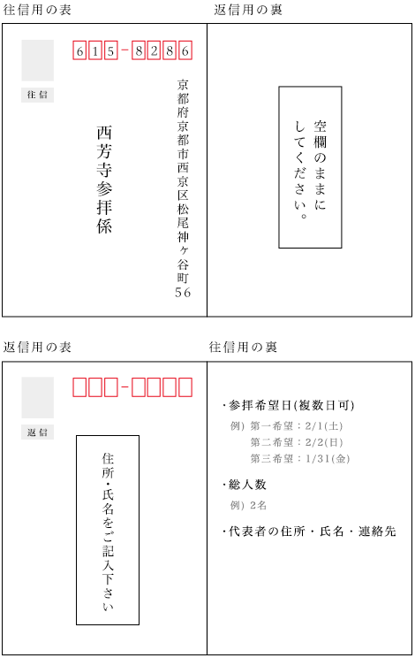
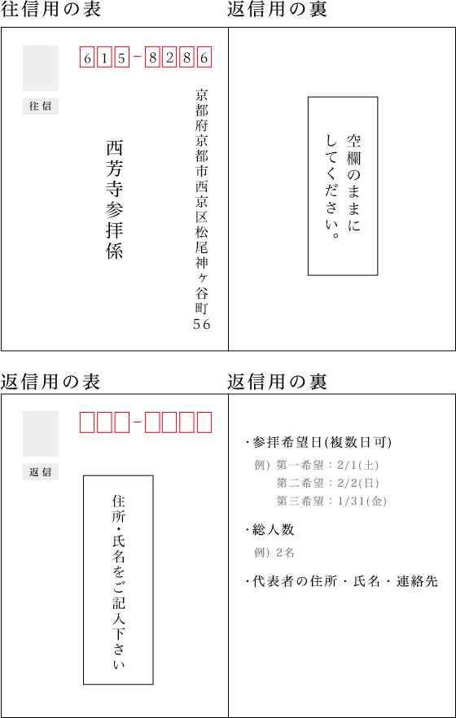

SCROLL
西芳寺は昭和3年(1928年)より、庭園の一般公開を始めました。
庭園一面を覆う120余種の苔の美しさから「苔寺」の愛称で親しまれ、戦後には大佛次郎の小説『帰郷』の舞台となり、更には昭和30年(1955年)頃より巻き起こった庭園ブームを契機として、世界各国から多くの方々がいらっしゃるようになりました。
一方で、参拝される方々が増えるにつれ、徐々に「観光公害*1」が生じたことから、昭和45年(1970年)頃より各行政当局や近隣住民の皆様と種々対策を講じて参りました。しかし、抜本的な解決には至らず、当寺としても、観光ブームに乗じて闇雲に参拝者を増やすのではなく、寺院本来の宗教的雰囲気を保ち、皆様に心静かにお参りいただきたいという願いがあり、昭和52年(1977年)より事前申込（往復はがき）による少数参拝制を実施することと致しました。
参拝者の皆様には庭園の拝観に先立ち、本堂での参拝にも参加いただいております。
*1 観光客増加に伴う、ゴミや自動車の排気ガスの増加、騒音や交通事故の発生等の問題
| 往復はがきによる事前申込について | 参拝希望日の2ヶ月前より受け付けます。遅くとも1週間前必着で申込下さい。但し、申込多数の場合や、法要のため、参拝申込を受け付けられない日程と重なった場合は、ご希望に添えないこともございます。 |
|---|---|
| 申込方法 |
①往復はがきに参拝希望日(複数日可)、総人数、代表者の住所・氏名・連絡先を明記して下さい。尚、時間を指定した参拝はご遠慮いただいております。
②往復はがきが当寺到着次第、お返事を差し上げております。 |
| (往復はがき) 送付先 |
〒615-8286 京都府京都市西京区松尾神ヶ谷町56 西芳寺参拝係 宛  |